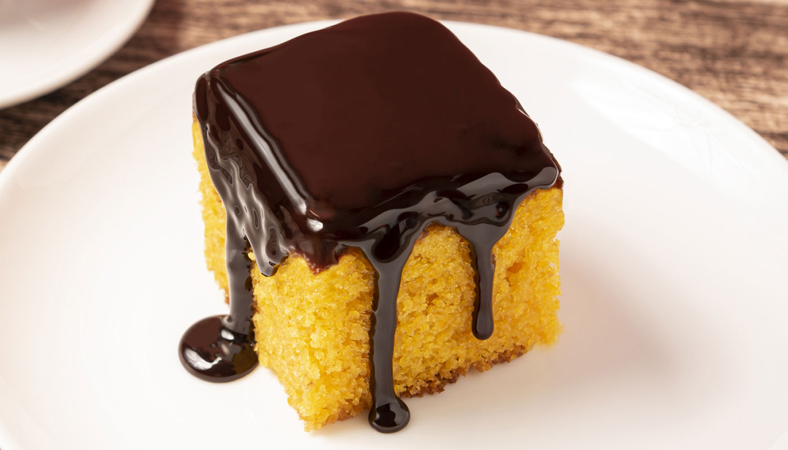

Bolo de Cenoura

Ingredientes
Ingredientes
3 cenouras médias
3 ovos
2 xícaras de açúcar
1 xícara de óleo de canola
2 xícaras de farinha de trigo
1 pitada de sal
1 colher de sopa de fermento químico
5 colheres de sopa de açúcar
3 colheres de sopa de chocolate em pó
2 colheres de sopa de manteiga
2 colheres de sopa de leite
Modo de Preparo
Modo de Preparo
No liquidificador, coloque 3 cenouras médias, 3 ovos, 1 xícara de óleo de canola e 2 xícaras de açúcar. Bata até ficar homogêneo.
Em uma tigela, coloque 2 xícaras de farinha de trigo, 1 pitada de sal e 1 colher de sopa de fermento químico. Misture.
Em seguida, adicione a mistura do liquidificador na tigela.
Com um fouet, misture até ficar homogêneo.
Transfira a massa para uma forma untada e enfarinhada.
Leve para assar em forno preaquecido a 180 graus Celsius por 40 minutos.
Em uma panela, coloque 5 colheres de sopa de açúcar, 3 colheres de sopa de chocolate em pó, 2 colheres de sopa de leite e 2 colheres de sopa de manteiga sem sal.
Mexa e deixe cozinhar até levantar fervura.
Assim que a mistura soltar do fundo, está pronta a cobertura.
Espere o bolo esfriar e derrame a calda ainda quente sobre ele.
Espalhe a cobertura e deixe esfriar antes de servir